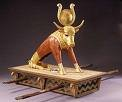

ది నేషన్ ఆఫ్ ఇజ్రాయెల్
ద్వితీయోపదేశకాండము పుస్తకం అంతటా, దేవుడు అబ్రాహాముకు వాగ్దానం చేసిన కనాను దేశానికి వచ్చినప్పుడు వారు ఎలా జీవించాలో దేవుడు తన ప్రజలకు వివరణాత్మక సూచనలను ఇచ్చాడు. ఈ సూచనలలో వారు ఏ విధమైన ప్రభుత్వాన్ని ఏర్పాటు చేయాలి అనేవి కూడా ఉన్నాయి. మొదట, వారు న్యాయమూర్తుల శ్రేణిచే పాలించబడతారు (అందుకే, న్యాయమూర్తుల పుస్తకం). అప్పుడు, ద్వితీయోపదేశకాండము 17:14-15లో, రాజులు ప్రజలను పరిపాలించాలని దేవుడు ఇశ్రాయేలీయులకు చెప్పాడు, అయితే దేవునిచే ప్రత్యేకంగా ఎంపిక చేయబడిన (అభిషేకించబడిన) రాజులు మాత్రమే.
ఇశ్రాయేలుకు మొదటి రాజు అయిన సౌలు దేవునిచే నియమించబడినప్పటికీ, అతను చివరికి అవిధేయుడు మరియు విశ్వాసం చాలా తక్కువగా ఉన్నాడు. దేవుడు సౌలు వంశం ద్వారా ఇశ్రాయేలు పాలనను కొనసాగించలేదు (అతని స్థానంలో సౌలు కుమారుడు రాజుగా మారలేదు).
ఈ బుక్లెట్లోని మొదటి విభాగంలో మనం చూసినట్లుగా, బైబిల్లోని వివిధ పుస్తకాలను అవి సూచించే సాహిత్యం (జానర్) ఆధారంగా వర్గీకరించవచ్చు. మొదటి ఎనిమిది పుస్తకాలు,ఆదికాండము త్రూ రూత్, ప్రారంభ చరిత్రలోని సంఘటనలను కాలక్రమానుసారం (అవి జరిగిన క్రమంలో) వివరించాయి. ఇజ్రాయెల్ దేశం యొక్క కథ పాత నిబంధన యొక్క అనేక పుస్తకాలలో చెప్పబడింది, కానీ కాలక్రమానుసారం కాదు. ఎవరికి మరియు ఎప్పుడు ఏమి జరిగిందో బాగా అర్థం చేసుకోవడానికి, సంఘటనలు ఎప్పుడు బయటపడ్డాయి మరియు పాత నిబంధనలో ఆ కథలు ఎక్కడ దొరుకుతాయి అనే కాలక్రమాన్ని అందించే ఒక రిఫరెన్స్ పుస్తకాన్ని (చాలా బైబిళ్లలో ఇటువంటి సూచనలు ఉన్నాయి) కనుగొనడం సహాయకరంగా ఉంటుంది. ఇజ్రాయెల్ను పరిపాలించిన రాజుల యొక్క చాలా సంక్షిప్త పట్టిక ఇక్కడ ఉంది మరియు వారి కథలు పాత నిబంధనలో చూడవచ్చు:
| సుమారు తేదీ | ||||
| 1050 బి.సి. | ||||
| 1010 బి.సి. | ||||
| 970 బి.సి. | ||||
| 925 బి.సి. - 722 బి.సి. | ||||
| ఇస్రాయేలు రెండు రాజ్యాలుగా విడిపోయినది |
డేవిడ్ రాజు
ఇజ్రాయెల్ రాజు తర్వాత, మరియు బహుశా గొప్పవాడు కాగల వ్యక్తి అసంభవమైన మూలం నుండి వచ్చాడు. డేవిడ్ చిన్న కుమారుడు (పెద్దవాడు కాదు, సాంప్రదాయకంగా) a బెత్లెహెం అనే చాలా మారుమూల పట్టణంలో నివసించిన వ్యక్తి. (తెలిసిపోయిందా?) డేవిడ్ వంశం (అతని వారసులు) ద్వారా యేసు పుట్టాడు!
లోకంలో తన చిత్తాన్ని నెరవేర్చడంలో అతనికి సహాయం చేయడానికి దేవుడు ఎన్నుకున్న మునుపటి మనుషులందరిలాగే, డేవిడ్ పరిపూర్ణుడు కాదు. అతను రాజుగా ఉన్న కాలంలో చాలా తీవ్రమైన పాపాలు చేశాడు. అయినప్పటికీ, I శామ్యూల్ 13:14లో, దేవుడు ప్రవక్త అయిన శామ్యూల్తో డేవిడ్ దేవుని స్వంత హృదయానికి అనుగుణంగా ఉన్న వ్యక్తి అని చెప్పాడు.
అవిధేయత లేని దేశం
దావీదు కుమారుడు సొలొమోను అతని స్థానంలో రాజు అయ్యాడు. సోలమన్ చాలా జ్ఞానవంతుడు మరియు తెలివైనవాడు. అతను తన తండ్రి డేవిడ్ చేత మొదట రూపొందించబడిన అద్భుతమైన ఆలయ నిర్మాణాన్ని పూర్తి చేయడానికి ఇజ్రాయెల్ను నడిపించిన రాజు కూడా. సోలమన్ కనీసం రెండు పాత నిబంధన పుస్తకాలను వ్రాసిన ఘనత పొందాడు: సాంగ్ ఆఫ్ సోలమన్ (ఒక ప్రేమ కవిత!) మరియు ప్రసంగి.
మీరు గుర్తు చేసుకుంటే, దేవుడు తన ప్రజలకు చేసిన మొదటి మరియు ప్రధానమైన ఆజ్ఞ ఏమిటంటే, వారికి వేరే దేవుళ్ళు లేరు. దురదృష్టవశాత్తు, ఇజ్రాయెల్ వివిధ రకాల దేవుళ్ళు మరియు విగ్రహాలను ఆరాధించే తెగలు మరియు దేశాలచే చుట్టుముట్టబడింది. ఆలయాన్ని నిర్మించడంలో సహాయం చేయడానికి సోలమన్ ఈ విదేశీ ప్రజలను చాలా మందిని ఇజ్రాయెల్లోకి తీసుకువచ్చాడు; కార్మికులతో పాటు వారి విగ్రహాలు కూడా వచ్చాయి. మన స్వంత జీవితాలలో మనందరికీ తెలిసినట్లుగా, మనలాగా లేని మరియు మన విశ్వాసాలకు భిన్నంగా ఉన్న వ్యక్తుల చుట్టూ నిరంతరం ఉండటం కష్టం, మరియు వారి కొన్ని నమ్మకాలు మరియు అభ్యాసాలను అనుసరించడం ప్రారంభించదు, ముఖ్యంగా మన విశ్వాసం బలహీనంగా ఉంటే. ఇశ్రాయేలు దేశానికి ఇదే జరిగింది.
సొలొమోను అనేక విధాలుగా గొప్ప రాజుగా ఉన్నప్పుడు, అతని పాలన తరచుగా కఠినమైనది. అతను ఆలయాన్ని నిర్మించడానికి ప్రజలపై భారీ పన్నులు విధించాడు, అలాగే తన కోసం ఒక విలాసవంతమైన రాజభవనాన్ని నిర్మించాడు. ఇది ఇతర విషయాలతోపాటు, ఇజ్రాయెల్ దేశం రెండు రాజ్యాలుగా విడిపోయింది (దక్షిణాన యూదా, ఉత్తరాన ఇజ్రాయెల్).

దేవుడు ప్రవక్తల ద్వారా హెచ్చరికలు పంపుతాడు
ఇజ్రాయెల్ దేశాన్ని దేవుడు తన ప్రజలుగా ఎంపిక చేసుకున్నాడు (ద్వితీయోపదేశకాండము 7:7-9), కానీ మళ్లీ మళ్లీ యూదులు తమ చుట్టూ నివసించే ప్రజల విగ్రహాలను ఆరాధించేవారు. తరచుగా, ఈ విగ్రహారాధనలో శిశువుల బలి మరియు లైంగిక అనైతికత వంటి ఆచారాలు ఉన్నాయి, దేవుడు తన స్వంత ప్రజల నుండి సహించలేడు.
వారి అవిధేయతకు తీవ్ర పరిణామాలు ఉంటాయని హెచ్చరించడానికి దేవుడు మళ్లీ మళ్లీ ప్రజల వద్దకు ప్రవక్తలను పంపాడు. పాత నిబంధన యొక్క చివరి భాగం దేవుడు తన ప్రవక్తలను చెప్పమని ప్రేరేపించిన పదాలను నమోదు చేస్తుంది. ఇజ్రాయెల్ ఓటమి మరియు ప్రవాసం కోసం దేవుడు తన ప్రవక్తల ద్వారా చేసిన ప్రతి అంచనా నెరవేరింది.
ప్రవక్తల వ్రాతల క్రమాన్ని చూడడానికి, మనం ఇజ్రాయెల్ రాజుల కోసం తయారు చేసిన చార్టులో వాటిని ఉంచవచ్చు. 1 మరియు 2 శామ్యూల్, 1 మరియు 2 రాజులు మరియు 1 మరియు 2 క్రానికల్స్ కాలంలో జరుగుతున్న సంఘటనలు ప్రవక్తలు ఇశ్రాయేలు ప్రజలను హెచ్చరించడానికి ప్రయత్నించారు.
ఓడిపోయిన దేశం
దాదాపు యాభై తర్వాత ఇశ్రాయేలీయులు తమ స్వదేశానికి తిరిగి రావడానికి అనుమతించబడినప్పటికీ ప్రవాసంలో సంవత్సరాలు, వెళ్ళిన వారు యూదు ప్రజల శేషం కంటే కొంచెం ఎక్కువ. ఇజ్రాయెల్ యొక్క కీర్తి రోజులు ముగిశాయి: ఆలయం దోచుకోబడింది మరియు ధ్వంసం చేయబడింది మరియు వారు మళ్లీ తమను తాము పరిపాలించుకోరు. రెండవ ప్రపంచ యుద్ధం తర్వాత ఇజ్రాయెల్ కొత్త దేశం ఏర్పడిన 1948 వరకు వారి భూమి ఏదో ఒక సామ్రాజ్యం పాలనలో ఉంటుంది.

పాత నిబంధనలోని చివరి మూడు పుస్తకాలు,హగ్గై, జెకర్యా మరియు మలాకీ, యూదుల ప్రవాసం తర్వాత దేవునిపై వారి పూర్వ విశ్వాసాన్ని పునరుద్ధరించడానికి మరియు ఆయనను (జుడాయిజం) ఆరాధించడంలో మళ్లీ విశ్వాసపాత్రులయ్యేలా ప్రోత్సహించడానికి వ్రాయబడ్డాయి.
కొన్ని తప్పుడు ప్రారంభాల తరువాత, వారు కొత్త ఆలయాన్ని కూడా నిర్మించగలిగారు. ఇది కింగ్ సోలమన్ ఆధ్వర్యంలో నిర్మించిన పూర్వ, మహిమాన్వితమైన ఆలయానికి నీడ మాత్రమే; అయినప్పటికీ, అది వారి స్వంత మాతృభూమిలో చివరకు ఒకే నిజమైన దేవుణ్ణి మళ్లీ ఆరాధించగలిగే ప్రదేశం.
మరియు, ప్రవక్తలు ఇశ్రాయేలు పతనాన్ని అంచనా వేస్తున్నప్పటికీ, వారి అంచనాలు దేవునికి మరియు ఆయన ప్రజలకు మధ్య ఒక కొత్త ఒడంబడికను రూపొందించడానికి వచ్చే రక్షకుడైన మెస్సీయకు సంబంధించిన ప్రవచనాలతో మిళితం చేయబడ్డాయి. (యెషయా 53, 55)
దేవుడు ఓడిపోయిన ప్రజలను విశ్వసించమని కోరాడు, విషయాలు వారి అస్పష్టంగా కనిపించినప్పటికీ, భవిష్యత్తు అతని చేతుల్లోనే ఉంది మరియు అతను ఇంకా తన అత్యున్నత సృష్టి అయిన మానవజాతితో సంబంధాన్ని కలిగి ఉండాలని కోరుకుంటున్నాడు.

యేసు ముందు మరియు తరువాత సమయం
చరిత్ర అంతా రెండు భాగాలుగా విభజించబడింది: యేసు పుట్టడానికి ముందు మరియు తరువాత. మన క్యాలెండర్లోని సంవత్సరం అంటే యేసు జన్మించినప్పటి నుండి ఎన్ని సంవత్సరాలు.
మేము ఇప్పుడు పాత నిబంధన మరియు అంతకు ముందు తేదీలను "క్రీస్తుకు ముందు" అనే బి.సి.తో గుర్తు చేస్తాము. యేసు జన్మించిన తర్వాత తేదీలు "A.D." అని సూచించబడ్డాయి, ఇది లాటిన్ పదం "అన్నో డొమిని"కి చిన్నది, అంటే "మన ప్రభువు సంవత్సరంలో".
యేసు మెస్సీయ అని, దేవుని కుమారుడని నమ్మని కొందరు వ్యక్తులు ఉన్నారు, వారు మన డేటింగ్ సిస్టమ్ నుండి ఆయనను తీసివేయాలనుకుంటున్నారు. వారు "సామాన్య యుగానికి ముందు" అనే పదాన్ని "B.C.E." ఉపయోగించడం ప్రారంభించారు. కానీ మన "సాధారణ యుగం" అనేది యేసు భూమిపై ఉన్న వాస్తవాన్ని బట్టి నిర్వచించబడింది, కాబట్టి దీని అర్థం ఒకే విషయం! మనం ముందే చెప్పినట్లుగా, చరిత్ర అంతా రెండు భాగాలుగా విభజించబడింది: యేసు పుట్టక ముందు మరియు తరువాత.

జుడాయిజం (దేవుని ఆరాధన) ప్రవాసం తర్వాత
యూదుల ఆరాధనలో ఎల్లప్పుడూ తమ పాప క్షమాపణ కోసం దేవునికి జంతు బలులు అర్పించేవారు. ఆదాము హవ్వలు తమ పాపానికి చనిపోవాలని దేవుడు చెప్పాడని మీకు గుర్తుందా? యూదుల కోసం, దేవునికి ఒక జంతువును బలి ఇవ్వడం, అతను వారికి సూచించినట్లుగా, వారి పాపాల కోసం జీవితాన్ని త్యాగం చేయడానికి ప్రతీక.
యూదులు తమ ప్రవాసం తర్వాత ఇజ్రాయెల్కు తిరిగి వచ్చినప్పుడు, దేవుణ్ణి ఆరాధించడం మరియు ఆయన ఆజ్ఞలన్నింటికీ మళ్లీ విధేయత చూపడం ప్రారంభించమని ప్రవక్తలు ప్రజలను ప్రోత్సహించారని మేము చెప్పాము.
యూదు ప్రజలు (కనీసం ఇజ్రాయెల్కు తిరిగి వచ్చిన కొద్దిమంది) తమ పాఠం నేర్చుకున్నట్లు అనిపించింది: విగ్రహారాధన మరియు అవిధేయతను దేవుడు సహించడు. యూదుల మతపరమైన నాయకత్వం యొక్క సహజ పర్యవసానంగా యూదులను పరిపాలించటానికి పైకి లేచిన యూదు పూజారులు, విశ్వాసకులుగా ఉండాలని నిశ్చయించుకున్న సమాజాన్ని రూపొందించడంలో సహాయపడ్డారు: వారు తమను తాము బయటి సంస్కృతులచే ప్రభావితం చేయనివ్వరు మరియు వారికి కట్టుబడి ఉండటానికి తమ వంతు కృషి చేస్తారు. అన్ని దేవుని చట్టాల లేఖ. మెస్సీయ అయిన యేసు జన్మించిన సమాజం ఇదే.
పాత ఒడంబడిక ప్రకారం, దేవుడు తన ఆజ్ఞలను పాటించే వారికి ఆరోగ్యం మరియు శ్రేయస్సును వాగ్దానం చేశాడు. ఇశ్రాయేలు జనాంగం దేవునిపై నమ్మకం ఉంచినప్పుడు వారు శక్తివంతంగా మరియు ధనవంతులుగా ఎదిగారు. ఇజ్రాయెల్కు తిరిగి వచ్చిన యూదులు గ్రహించని విషయం ఏమిటంటే, ఇజ్రాయెల్ పతనంతో, పాత ఒడంబడిక ఇకపై అమలులో లేదు.
పాత నిబంధన యొక్క గొప్ప పురుషులు మరియు మహిళలు
మేము కేవలం కొన్ని పేజీలలో సుదీర్ఘ కాలం గురించి మాట్లాడాము, కానీ బైబిల్ దేవుని గొప్ప పురుషులు మరియు స్త్రీల కథలతో నిండి ఉంది. మీరు వాటిని తెలుసుకోవాలి! ప్రారంభించడానికి ఇక్కడ జాబితా ఉంది; మీరు బైబిలు చదవడం ప్రారంభించినప్పుడు, ఈ జాబితాను తయారు చేయగల అనేకమందిని మీరు కనుగొంటారు. వీటితో ఎందుకు ప్రారంభించకూడదు; తర్వాత, సమయం గడిచేకొద్దీ మరియు మీరు మరింత చదివే కొద్దీ, మీరు మీ స్వంత "బైబిల్ గ్రేట్స్" జాబితాను జోడించవచ్చు! మీరు వాటిని కనుగొన్నప్పుడు అధ్యాయాలు మరియు పద్యాలను గుర్తు పెట్టుకోండి, తద్వారా మీరు వాటిని ఎప్పుడైనా గుర్తించగలరు!
ప్రారంభిద్దాం!
మీరు మరింత ముందుకు వెళ్లే ముందు, పైన పేర్కొన్న కొన్ని భాగాలను లేదా ఇప్పటివరకు అనులేఖనాలు ఇవ్వబడిన వాటిలో దేనినైనా వెతకడానికి ఇప్పుడు మంచి సమయం కావచ్చు. "అధ్యాయం మరియు పద్యం" సూచనలను చూడటం నేర్చుకోవడం కోసం ఇది గొప్ప అభ్యాసం.